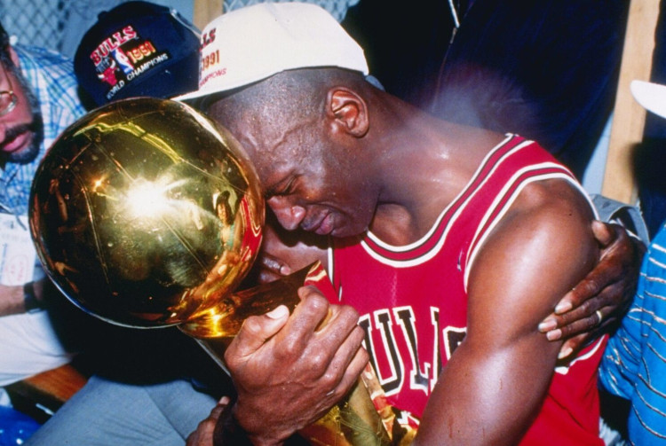

Seu começo na NBA
Durante sua primeira temporada na NBA, Jordan teve médias de 28,2 pontos e um aproveitamento de 51,5% nos arremessos tentados. Ele rapidamente se tornou um dos jogadores favoritos dos fãs, mesmo em arenas rivais, e apareceu na capa da Sports Illustrated com o título "A Star is Born" com pouco mais de um mês de carreira profissional.Jordan também foi escolhido para o NBA All-Star Game pelos fãs em sua temporada de estreia.A polêmica começou antes do All-Star Game, quando veio à tona que vários jogadores veteranos, liderados por Isiah Thomas, estavam chateados com a quantidade de atenção que Jordan estava recebendo. Isto conduziu a um chamado "freeze-out", onde os jogadores se recusaram a passar a bola para ele durante o jogo. A polêmica pouco afetou Jordan quando ele voltou a jogar na temporada regular, onde ao final, iria ser escolhido Calouro do Ano. Os Bulls terminaram a temporada em 7º lugar na Conferência Leste com 38 vitórias e 44 derrotas, perdendo na primeira rodada dos playoffs em quatro jogos para o Milwaukee Bucks.

A segunda temporada de Jordan foi interrompida após quebrar um pé no terceiro jogo da temporada, o que o levou a perder 64 jogos. Apesar da lesão de Jordan, os Bulls conseguiram a última vaga do Leste com 30 vitórias. Jordan se recuperou a tempo de participar nos playoffs, e teve um bom desempenho em seu retorno. Contra o Boston Celtics de 1985-86 que é muitas vezes considerado um dos maiores da história da NBA, Jordan estabeleceu o recorde ainda intacto para pontos em um jogo de playoff, com 63 no jogo 2. Os Celtics, no entanto, varreram os Bulls na série.
Marca de Tênis - "Air Jordans"

Os tênis Air Jordan são icônicos e muito famosos pelo mundo. Quem nunca ouviu falar sobre eles e quis obter um? Vamos descobrir um pouco sobre a historia deles. Jordan passou sua carreira na faculdade jogando sempre de Converse, mas ele sempre quis assinar um contrato com a adidas. Os calçados da marca alemã ofereciam um perfil baixo com uma sola mais fina que o ajudava a se sentir mais confortável e ágil. Essa resposta tátil foi crucial para sua jogabilidade, e a Nike, até então, não poderia oferecer isso a ele. Pelo menos foi o que ele disse na época. Por fim, a Nike ofereceu a Jordan cinco vezes o que a Converse ofertou (um acordo recorde, três vezes maior). O agente de Jordan, David Falk, recebeu uma oferta da Spot-Bilt que teria somado mais dinheiro do que a oferta da Nike com o tempo, mas a Nike tinha uma arma secreta: a visão. O Diretor de Criação da Nike, Peter Moore, estava em todas essas reuniões e foi encarregado de criar o primeiro Air Jordan de acordo com as diretrizes fornecidas pelo próprio MJ. Ele queria que os tênis fossem baixos, algo diferente e excitante. O resultado foi o Air Jordan 1: Desde então o tênis começou a fazer sucesso, tanto dentro quanto fora das quadras. E de lá pra cá tem sido uma das parcerias de maior sucesso da Nike!!!
